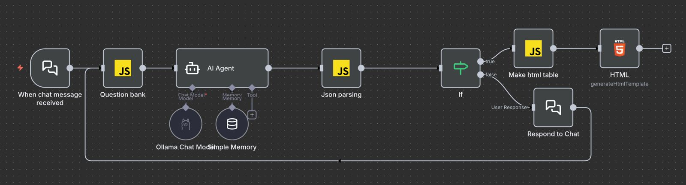
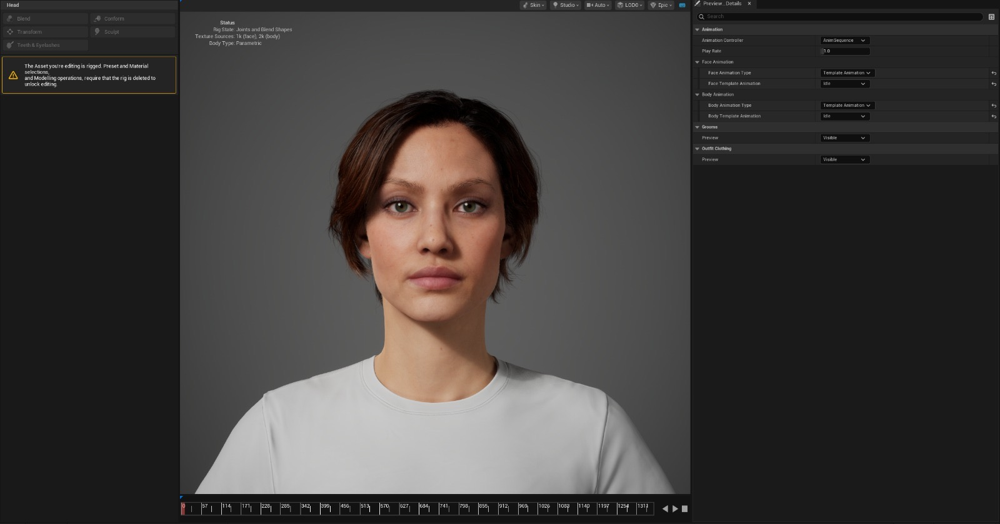

Research
This section details the research and prototypes during project development.
Earliest prototype
Developed prior to the shift toward a C# Windows application, this initial prototype was built entirely in Python. The system utilized a form extraction utility to parse online fields, followed by an AI model that conducted user conversations via a terminal interface. Once complete, the gathered responses were injected into the target online form using an automated filler.
Techniques learned
The form extraction module proved to be a critical asset, serving as the foundational bridge between the application and external web forms. Successfully integrated into the final product, this feature enables seamless data synchronization. Furthermore, this prototype provided essential experience in deploying and managing local AI models, a core component of the current system's architecture.
Reason for improvement
Despite its functional success, the prototype remained an unrefined proof of concept that relied on a terminal-based interface rather than a dedicated graphical user environment. Furthermore, the system architecture was limited to single-form processing, creating a rigid dependency on specific online form structures that hindered scalability and user flexibility.
AI control flow prototype
We integrated n8n to orchestrate a more structured AI control flow. In this model, the AI was prompted to return a JSON object containing two key variables: an evaluation flag to determine if a response was satisfactory and the corresponding conversational output. This logic was applied iteratively across all form fields, culminating in a structured data table that compiled the user’s final responses for review.

Techniques learned
This phase was essential for establishing the foundational logic of our conversation-driven data collection. By prototyping with n8n, we gained a deeper understanding of the AI evaluation loop and the necessity of structured state management. These findings were vital in transitioning from a linear script to the adaptive, intelligent interaction model we have today.
Reason for improvement
The JSON-based extraction method lacked the necessary robustness for extended dialogues, particularly when utilizing resource-constrained AI models. This approach created a rigid dependency on the model’s ability to strictly adhere to a specific schema; any deviation in output syntax resulted in system failure. Furthermore, the architectural overhead required to integrate a third-party orchestration tool like n8n into a native C# environment presented significant implementation challenges.
Conversation prototype
This prototype visually aligns with the final product's interface; however, it utilizes a distinct architectural approach for speech synthesis and lip-synchronization. By leveraging the Windows native speech engine, the system implemented a word-by-word viseme mapping logic. In this configuration, the C# application dynamically controlled the avatar’s mouth animations in real-time, synchronizing them with the operating system's localized voice output.
This iteration demonstrated significant potential for broad linguistic compatibility and architectural efficiency. By leveraging the host environment’s native speech engine, the system achieved a substantial reduction in computational overhead, allowing for high-performance execution without the need for intensive local processing or external cloud dependencies.
Techniques learned
This prototype serves as the foundational iteration of the current production environment, marking the first successful integration of a verbal AI-driven dialogue for data collection. Several core architectural components developed during this phase remain central to the final application, including the automated Python environment discovery logic, real-time microphone input processing, and the integrated user interface elements.
Reason for improvement
While highly functional, this synchronization method relied on the C# application dynamically terminating animations based on real-time audio telemetry, which occasionally led to minor timing discrepancies. In contrast, the current HeadTTS architecture utilizes a pre-aligned, unified playback system that ensures a smoother visual experience. Additionally, the transition from the native speech engine to our current solution allowed us to move beyond the more traditional synthetic tonal quality of OS-level voices toward a more natural, human-like auditory experience.
Future prototype
This exploratory prototype represents a high-fidelity frontier for the project, utilizing Unreal Engine’s MetaHuman framework to achieve superior visual realism. Beyond static aesthetics, MetaHumans offer a sophisticated emotional expression system, providing a more empathetic and lifelike conversational experience. While currently independent of the main application, this iteration serves as a benchmark for the next generation of user-centric digital interaction.

This iteration demonstrated significant potential for high-fidelity user interaction; however, full system integration presents substantial architectural complexities. The primary challenges involve the hardware requirements inherent in the Unreal Engine environment and the associated computational overhead. Consequently, this high-performance framework remains a strategic roadmap item for future development cycles.